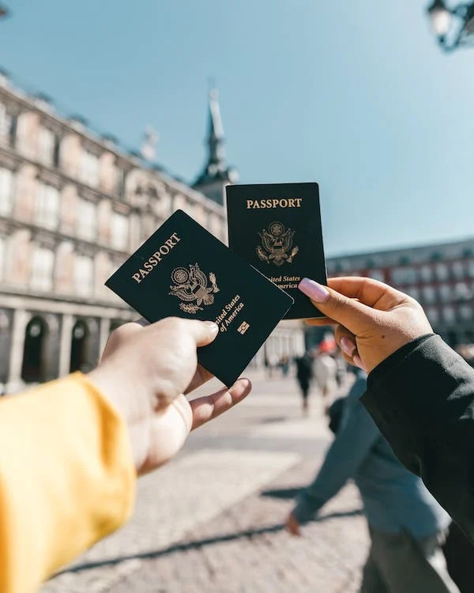
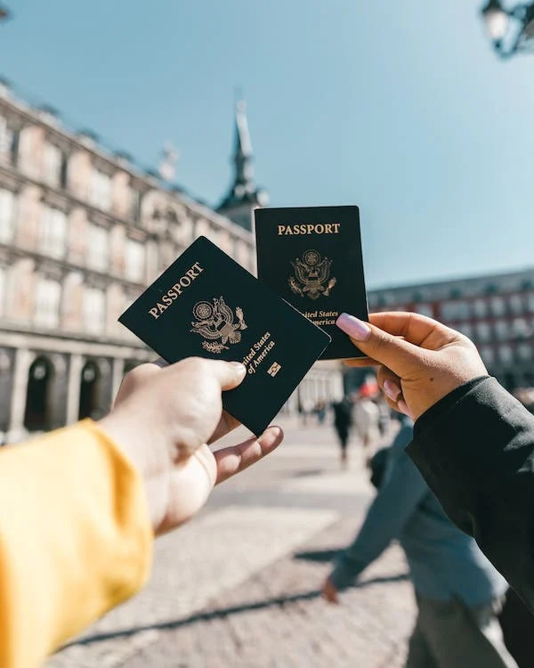

How do we pay you?
You present what you want to do, how much your budget is and how much spending money you want. I find, within your budget, a place to stay, and some suggestions on what you can do within your budget. Sharing your interests with me is key, as I want you to do what you want, when you want, and how you want.
 

What happens if we miss a flight?
As travelers, we understand that sometimes you might miss your flight. So, it's important to have a backup plan. Whether it's you or the airline that cancels the flight, there are steps you should take to minimize the potential fallout. Once you've missed your flight, inquire about getting rebooked on another flight by asking the airline: